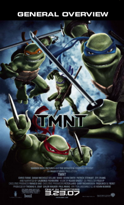

“Ditching the cheeky, self-aware wink that helped to excuse the concept's inherent corniness, the movie attempts to look polished and 'cool,' but the been-there animation can't compete with the then-cutting-edge puppetry of the 1990 live-action movie.”
Peter Debruge Variety
“TMNT is a fun, action-filled adventure that will satisfy longtime fans and generate a legion of new ones.”
Todd Gilchrist IGN Movies
“It stinks!”
Jay Sherman (unemployed)
“The rubber suits are gone and they've been redone with fancy computer technology, but that hasn't stopped them from becoming dull.”
Joshua Tyler CinemaBlend.com
“The turtles themselves may look prettier, but are no smarter; torn irreparably from their countercultural roots, our superheroes on the half shell have been firmly co-opted by the industry their creators once sought to spoof.”
Jeannette Catsoulis New York Times
“Impersonally animated and arbitrarily plotted, the story appears to have been made up as the filmmakers went along.”
Ed Gonzalez Slant Magazine
“The striking use of image and motion allows each sequence to leave an impression. It's an accomplished restart to this franchise.”
Mark Palermo Coast (Halifax, Nova Scotia)
“The script feels like it was computer generated. This mechanical presentation lacks the cheesy charm of the three live action films.”
Steve Rhodes Internet Reviews

- STARRING
- Mako
- Sarah Michelle Gellar
- DIRECTOR
- Kevin Munroe
- RATING
- PG
- THEATRICAL RELEASE
- Mar 23, 2007
- MOVIE SYNOPSIS
- After the defeat of their old arch nemesis, The Shredder, the Turtles have grown apart as a family.
- MPAA RATING
- PG, for animated action violence, some scary cartoon images and mild language
- RELEASE COMPANY
- Warner Bros.
- GENRE
- Action/Adventure, Comedies, Childrens, Martial Arts, Superheroes, Ninjas, Animated Characters
- OFFICIAL MOVIE SITE
- The Official TMNT Site
(1-8) of 88